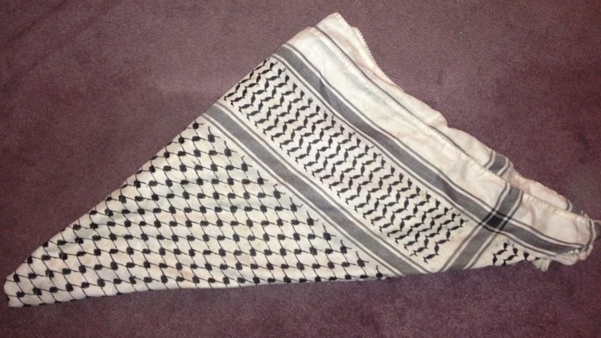

الكوفية
The Keffiyeh: From the ancient peoples of mesopothamia, to the modern Arab culture
The Summerian Origin
The Keffiyeh/Shemagh originates among the rulers of Sumer, tho called "Hatta"(pronounced: ħatˤa) at the time, it was worn by leaders to protect them from the sun, and denote their status.
The Names of the Keffiyeh
The Keffiyeh has many names, with these names differentiating the variants a lot of the time. Here they are explained:
The "Keffiyeh"(الكوفية in Arabic), mostly used in Palestine, Iraq and Israel. It litterally translates to "From Kufa",A city in southern Iraq. This name is newer, Kufa didnt exist until after the decline of Sumer
The "Shemagh"(شماغ in Arabic), used in Jordan, Syria and Saudi Arabia, The Shemagh is somewhat different from the Keffiyeh, it is basically the same scarf tho.
The "Hatta"(حطة in Arabic), used in Jordan, Iraq, and Palestine. It is the original name of the scarf, originating in Sumer.
The "Yashmagh"(يشماغ in Arabic), used in Saudi Arabia, this name is a variant of the name "Shemagh".
According to it's color, the Keffiyeh can be named differently, like this:
Red: Shemagh, this is likely due to the fact the Jordanian Shemagh is Red
Black: Keffiyeh, this is likely due to the fact the Palestinian Shemagh is Black
Plain white: Ghutra, this one is used in the Peninsula
Plain green: Khderia
The Variants
The Keffiyeh has a ton of variants, here they are:
The Palestinian Keffiyeh

A Palestinian wearing the Keffiyeh, as a scarf

Palestinian women wearing the Keffiyeh

A happy and smiling Yasser Arafat famously wearing his Keffiyeh

Iraqi Christians wearing various types of the Keffiyeh
The Jordanian Shemagh


Jordanian Soldiers wearing the Jordanian Shemagh

PFLP Supporters wearing the Jordanian Shemagh, as a symbol of Arab socialism

An angry old man from Jordan

An old man from Maaloula, Syria, wearing the Jordanian Shemagh
The Saudi Shemagh


Saudi Prince Muhammad bin Salman

Sheikh Assim alHakeem, a Saudi sheikh popular on social media

Saudi man in London
Iraqi Christians wearing many different keffiyehs
The Syrian Shemagh

The Sinai Shemagh

Single Colored Shemagh

The Stigmatization(2001 - present)
The events of September 11th 2001 changed many people's view on the Keffiyeh, as extremist groups tended to use it to hide their identities. Alltho this has been happening for decades and the keffiyeh was already associated with militant groups, like the PLO, and PFLP, videos of this didnt go viral until 2001. Among militant groups utalizing it are:
Al Qaeda (which uses the Sinaian, and sometimes Palestinian or Jordanian keffiyehs)
Hamas (which uses both the Jordanian and the Palestinian keffiyehs)
Popular Front for the Liberation of Palestine/PFLP (which used the red Jordanian keffiyeh, due to red being the color of communism)
ISIS (which uses the Sinaian and Jordanian keffiyehs, alltho sometimes Palestinian ones too)